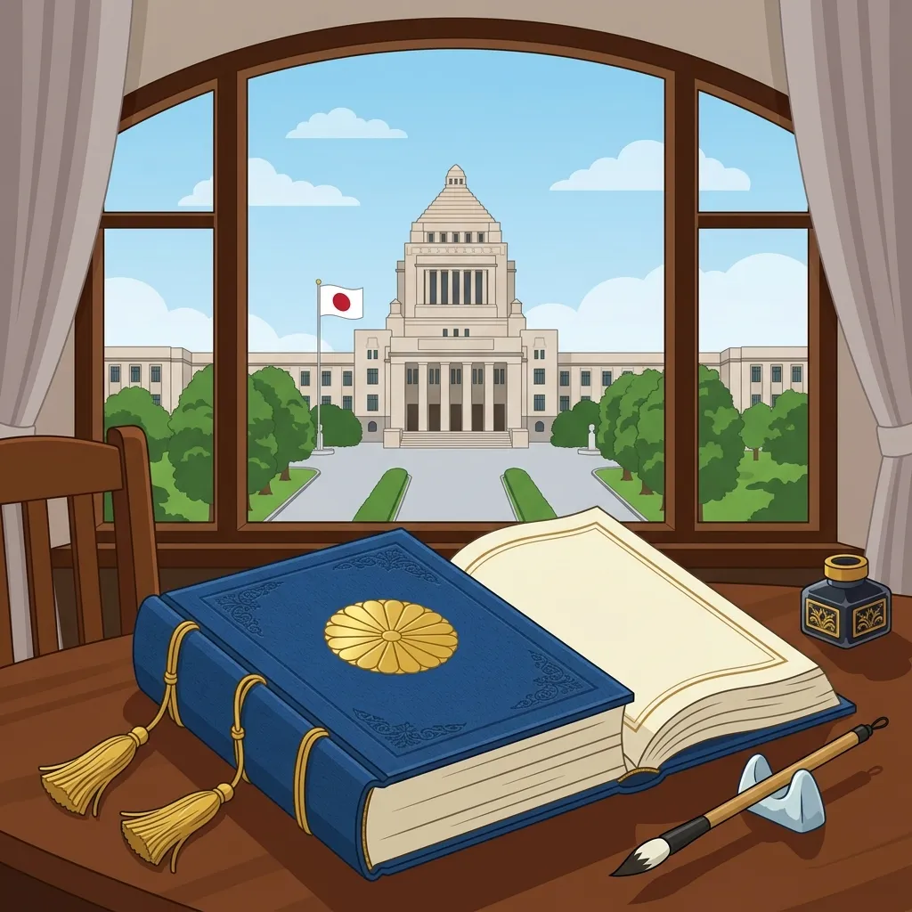

24. 大日本帝国憲法�E制定と条紁E��正
10年後に国会を開くことを紁E��した明治新政府�E、欧米に対抗できる国づくりの総仕上げとして、�E法�E制定と国会�E開設を急ぎました。また、E��年の課題であった「不平等条紁E�E改正」とぁE��悲願を果たす戦ぁE��始まりました。今回は、日本初�E近代憲法である「大日本帝国憲法」�E仕絁E��と、条紁E��正を�Eし遂げた�E�人の外相のドラマを解説します！E/p>
1. 大日本帝国憲法（だぁE��っぽんてぁE��くけんぽぁE���E制宁E/h2>
政府�E、日本の近代国家としての枠絁E��をつくるため、まず�E冁E��制度を創設し！E885年�E�、�E代冁E��総理大臣に伊藤博文�E�いとぁE�Eろ�Eみ�E�E/span>が就任しました。伊藤は憲法�E草案をつくる中忁E��物となりました、E/p>
伊藤博文はヨーロチE��へ渡り、各国の憲法を調査しました。その中で、君主�E�皇帝）�E権限が非常に強く、議会�E力が抑えられてぁE��プロイセン�E�ドイチE���E憲況E/span>を手本にすることに決めました。これ�E、日本でも天皁E��中忁E��する強ぁE��府をつくりたかったためです、E/p>
政府�E、民間の運動家たちがつくった基本皁E��権を重視する草案（私擬憲法）を完�Eに無視し、極秘裏に憲法づくりを進めました、E/p>
1889年2朁E1日、Espan class="marker-yellow">大日本帝国憲況E/span>が発币E��れました。これ�E、天皁E��国民に恵み与える形をとめEspan class="marker-yellow">欽定�E法（きんてぁE��んぽぁE��E/span>でした、E/p>
 図1�E�黒田渁E��首相に対し、天皁E��ら�E法が手渡される「大日本帝国憲法発币E��」�Eイメージ ◁E大日本帝国憲法�E特徴 憲法ができた翌年の1890年、日本初�E国会である帝国議会（てぁE��くぎかい�E�E/span>が開かれました、E/p>
議会�E、皇族や華族、多額納税老E��どからなる話し合ぁE��関の貴族院�E�きぞくぁE���E�E/span>と、有権老E�E選挙で選ばれた議員からなめEspan class="marker-orange">衁E��院�E�しめE��ぎいん！E/span>の�E�つから構�Eされました�E�二院制�E�、E/p>
1890年に行われた第1回衁E��院議員総選挙では、投票できる国民（有権老E��に極めて厳しい条件が設けられてぁE��した。これもチE��トで非常によく問われます！E/p>
「直接国税を15冁E��上納める、E5歳以上�E男子、E ※こ�E厳しい条件に当てはまった�Eは、当時の富裕な地主めE��農などに限られており、E*全人口のわずか紁E.1%**にすぎませんでした�E�女性めE��しい人、E��は一刁E��挙権はありませんでした�E�、E/p>
明治政府にとって、幕末に結�Eされた「領事裁判権の容認」と「関税�E主権の欠如」とぁE��不平等条紁E��改正することは、欧米と肩を並べるため�E悲願�E国家目標でした。この目標を成し遂げた２人の外務大臣の功績を整琁E��ましょぁE��E/p>
※これら�E改正が�E功した背景には、日本が近代憲法や法制度を整え、日渁E�E日露戦争で勝利したことで、欧米諸国から「対等な斁E�E国」として実力を認められたことがありました、E/p>
🔥 こ�E単�EのチE��ト対策�E暗記�EコチE/p>
① プロイセン�E�ドイチE���E法を手本に
② 憲法�E発币E��E889年2朁E1日�E�E/h3>
2. 帝国議会�E開設と「最初�E選挙、E/h2>
◁E最初�E衁E��院議員選挙�E条件
3. 悲願！不平等条紁E�E改正
拁E��した外相
達�Eした年
改正の冁E��とポインチE/th>
陸奥宗�E
�E��Eつむねみつ�E�E/td>
1894年
�E�日渁E��争�E直前！E/span>領事裁判権�E�治外法権�E��E撤廁E/span>に成功、Ebr>イギリスとの間で日英通商航海条紁E��調印しました。日本国冁E��罪を犯した外国人を、日本の法律で裁けるよぁE��なりました、E/td>
小村寿太郁E/span>
�E�こむらじめE��ろう�E�E/td>
1911年
�E�日露戦争�E後！E/span>関税�E主権の完�E回復に成功、Ebr>輸入品にかける税率を日本が�E主皁E��決められるようになり、つぁE��半世紀に及んだ不平等条紁E��すべて解消されました、E/td>
・、E*むっつり（陸奥�E�E*裁判に勝つ」、E*封E*さい�E�小村�E�E*関稁E*」と関連付けて頭に入れましょぁE��E